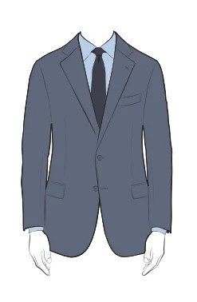
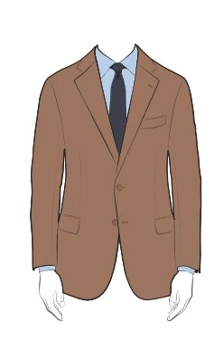
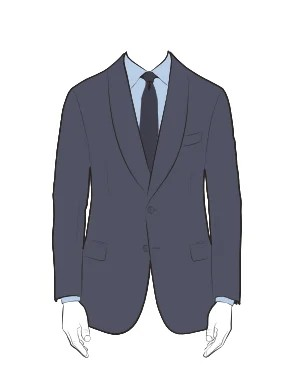
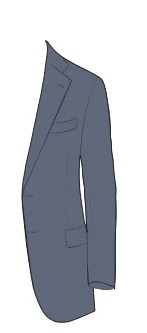
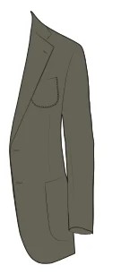
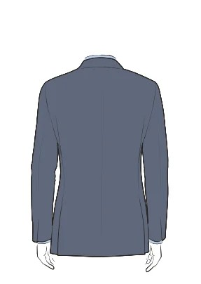
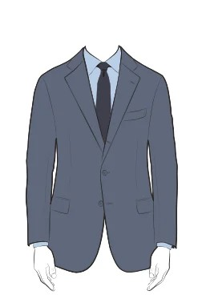
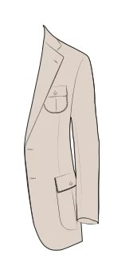
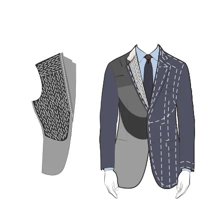
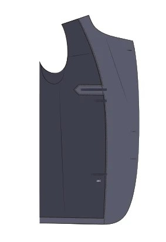

Styles & Options
Detail für Detail — das Sakko
Knöpfe, Revers, Taschen, Schulter, Futter: Wählen Sie, was Ihnen gefällt. Sie müssen nicht alles festlegen — den Rest besprechen wir im Atelier, wo wir Mass nehmen und mit Ihnen den Stoff wählen.

Einreiher
Zwei Knöpfe
Der klassische Business-Standard.

Zweireiher
Sechs auf zwei
Der Savile-Row-Klassiker.

Revers fallend
Normal (8.0 cm)
Ausgewogene Proportionen.

Revers steigend
Normal (8.0 cm)
In italienischer Manier.

Schalkragen
Normal (6.0 cm)
Für Smoking und Samtsakko.

Taschen
Barchetta & Pattentasche
Vielseitig, Patten einsteckbar.

Taschen
Aufgesetzt & aufgesetzt
Lässiger Blazer-Stil.

Rücken
Seitenschlitze
Fällt im Sitzen tadellos.

Einreiher
Drei auf zwei
Neapolitanisch weich gerollt.

Taschen
Safari & Safari
Blasebalgtaschen mit Falte.

Einlage
Klassische Einlage
Ganzflächige Rosshaar-Einlage.

Monogramm
Monogramm im Futter
Initialen nach Wunsch gestickt.
The Sartorialist ZürichStyles & Options